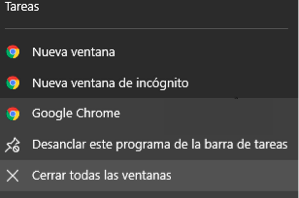
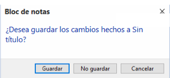

Windows nos ofrece la posibilidad de cerrar las ventanas de varias formas.
- Con el Ratón. Haciendo clic sobre el aspa situada en la parte superior derecha de la ventana.
- Pulsando en la esquina superior izquierda. Al hacerlo, se despliega un menú con las opciones de la ventana, en el que podemos escoger Cerrar.
- A través del menú. Abriendo el menú Archivo, cuando está disponible, o haciendo clic sobre la esquina superior izquierda y seleccionando la opción Cerrar o Salir. La opción salir cierra la aplicación por completo. Ya que es habitual que las aplicaciones permitan trabajar con varios documentos a la vez dentro de sí mismas, la opción cerrar nos servirá para cerrar la ventana activa, es decir, la que estamos visualizando.
- Con el teclado. Con las teclas Alt + F4 podremos ir cerrando las ventanas activas una por una. En caso de no haber ninguna abierta nos preguntará si queremos cerrar el sistema.
- Cerrar desde la barra de tareas. En la barra inferior vemos un icono por programa abierto. Si tenemos abiertas varias sesiones de un mismo programa, por ejemplo, si hemos abierto dos ventanas diferentes de nuestro navegador, Windows 10 las agrupará. Podemos cerrarlas todas a la vez haciendo clic con el botón derecho en el icono correspondiente de la barra de tareas, esto hará que aparezca una ventana como la siguiente. Ya sólo queda hacer clic en la opción Cerrar todas las ventanas. Si en cambio sólo hemos abierto una ventana indicará la opción Cerrar ventana.

Sea cual sea la forma que utilices para cerrar, si tratas de cerrar un programa sin haber guardado los cambios que has efectuado, te saldrá un cuadro de diálogo preguntándote si deseas guardar los cambios antes de cerrar.

- Guardar. Guarda los cambios y después cierra la aplicación.
- No guardar. Cierra la aplicación sin guardar los cambios.
- Cancelar. Vuelve a la pantalla anterior, no guarda los cambios y tampoco cierra la aplicación.